Local runtime
Keep essential processing and state close to the environment where the work happens, with resilient recovery paths.

Local · secure · governed
EVE-OS keeps essential execution close to the people and systems that depend on it. Connections remain explicit, operating boundaries stay visible, and consequential decisions retain a path to human review.
Public architecture
Keep essential processing and state close to the environment where the work happens, with resilient recovery paths.
Move only approved, minimized information through explicit interfaces, including offline-first synchronization.
Apply declared boundaries, preserve traceable records, and keep accountable people at consequential checkpoints.
Operating boundary
EVE-OS is designed for high-stakes and regulated settings where reliability, accountability, and local control matter. Product capabilities and deployment claims remain limited to the scope of each evaluated implementation.
Speak with Hermetic Labs →